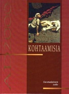
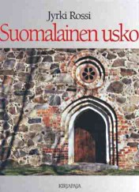

Koko maailman kirkko


Keskiajan läntisessä Euroopassa katolisen kirkon vaikutus ulottui hengellisen elämän ohella myös talouteen ja politiikkaan. Suomeen katolinen kristillisyys saapui 1100-luvun puolivälissä (-> s.14). Uskonpuhdistus mursi katolisen kirkon vallan 1500-luvulla ja katolisuus katosi Suomesta miltei täysin kolmeksi sadaksi vuodeksi. Vasta 1800-luvulla katolisuus palasi Suomeen Venäjän armeijan sielunhoitajien, puolalaisten dominikaanien käynnistäessä seurakuntaelämää Viipurissa ja Helsingissä. "Katolinen kirkko Suomessa" rekisteröitiin uskonnolliseksi yhdyskunnaksi vuonna 1929. Nykyisin (1999) katolisia on maassamme virallisten tietojen mukaan noin 7 300, mutta todellinen määrä on lähinnä pakolaisten vuoksi jonkin verran suurempi.
Roomalaiskatoliseen kirkkoon kuuluu eri puolilla maailmaa yli miljardi jäsentä. Kirkon johtajana on paavi, joka on Kristuksen sijainen maan päällä ja samalla erehtymätön julistaessaan koko kirkkoa koskevan opin. Nykyinen paavi, puolalaissyntyinen Johannes Paavali II, valittiin tehtäväänsä vuonna 1978. Hän on ensimmäinen paavi, joka on vieraillut Suomessa (1989). Paavin valta kirkossa on edelleen hyvin suuri. Katolinen oppi perustuukin Raamatun lisäksi traditioon, johon paavien oppilauselmat liittyvät kiinteästi.
Katolisen opin mukaan Jumala armo on ns. pyhittävää armoa. Armon kutsuun ihminen vastaa teoillaan. Kun ihminen armon vaikutuksesta tekee kaikkensa pelastuakseen, ei Jumala kiellä häneltä lopullista pelastumista. Vaikka tekoja korostetaankin, niin ilman armoa ihmisellä ei ole mitään mahdollisuutta saavuttaa iankaikkista elämää.
Ihminen saa armon ja hänet vanhurskautetaan pyhän kasteen sakramentissa. Kaste on tapahtuma, jossa Jumala poistaa ihmisen perisynnin ja tekee hänet todellisesti vanhurskaaksi. Ihminen siis itsessään kelpaa Jumalalle ja kykenee kasteen jälkeen pelastavaan uskoon ja hyviin tekoihin.
Kristuksen ristillä kärsimä rangaistus ei poista kaikkia synnin rangaistuksia, vaan ihminen joutuu kuoleman jälkeen vielä kiirastuleen. Kiirastulessa sielut puhdistuvat, ja pääsevät sitten lopulta kohtaamaan Jumalan.
Sakramentit tienä Jumalan luo
Katolisen kirkon sakramentit ovat samat kuin ortodokseilla (-> s. 53), mutta niiden käytössä ja opillisessa merkityksessä on eroja. Sakramentit sisältävät ja antavat ihmiselle armon.
1) Kaste tulee toimittaa Isän ja Pojan ja Pyhän Hengen nimeen ja se on välttämätön pelastumiselle. Suositellaan, että kastetilaisuudessa lapselle annetaan jonkun pyhimyksen nimi. Näin lapsi saa oman suojeluspyhimyksen.
2) Vahvistuksen sakramentin toimittaa piispa tai poikkeustapauksessa pappi. Vahvistus toimitetaan tavallisesti lapsen ollessa 7-12-vuotias ja siinä lapsesta tulee "hengellisesti täysi-ikäinen". Edellytyksenä pyhällä oliiviöljyllä voitelemiselle on henkilön tietoinen uskonelämä. Sakramentin merkitys on antaa ihmiselle lisää kasteessa saatua pyhittävää armoa.
3) Eukaristia eli alttarin sakramentti jaetaan seurakuntalaisille tavallisesti vain leivän muodossa. Viiniä ei aina jaeta, koska Kristus on kokonaan läsnä jo pelkässä pyhitetyssä leivässä. Vatikaanin II:n konsiilin jälkeen on ollut kuitenkin mahdollista jakaa ehtoollinen molemmissa muodoissaan. Ehtoollisjumalanpalvelus eli messu on koko katolisen kultin keskus. Messu-uhrissa on itse Kristus läsnä. Kun pappi lukee alttarilla ehtoollisen asetussanat, muuttuu leipä todelliseksi Kristuksen ruumiiksi ja viini Kristuksen vereksi (transsubstantiaatio-oppi). Ehtoollisessa nautitaan siis kirjaimellisesti itse Kristus, vaikka leivän ja viinin ulkomuoto säilyykin muuttumattomana.
4) Rippi muodostuu kolmesta osasta: katumuksesta, tunnustamisesta ja hyvitystöistä. On arveltu, että yksi syy katolisten maiden mataliin itsemurhatilastoihin olisi yleinen rippikäytäntö. Ihmiset saavat tunnustaa syntinsä papille, joka julistaa synnit anteeksiannetuiksi. Pappi saattaa määrätä ripittäytyjälle hyvitystöitä, kuten rukousta, paastoa, almujen antoa tai tiettyjä erityisiä tehtäviä.
5) Papiksi vihkiminen tapahtuu piispan kättenpäällepanon kautta. Katolinen kirkko ei ole hyväksynyt naispappeutta. Papiksi vihittävän tulee katolisen kirkon läntisessä osassa (riituksessa) olla naimaton ja elää elämänsä selibaatissa, mutta ns. diakoniksi voidaan vihkiä yli 35-vuotias naimisissa olevakin mies.
6) Avioliitto on pyhä ja erottamaton. Avioeroa ei sallita, vaikka toinen osapuoli olisi tehnyt aviorikoksen. Eräissä poikkeustapauksissa avioliitto voidaan tosin todeta pätemättömäksi. Ns. seka-avioliitot esimerkiksi katolisen ja luterilaisen välillä sallitaan, mutta toivomus on, että vihkimisen toimittaa katolinen pappi. Samoin toivotaan, että aviopari kasvattaisi lapsensa katoliseen uskoon.
7) Sairaiden voitelu annetaan tavallisesti vasta kuolemaan valmistautuvalle ihmiselle. Sakramentin aiempi nimi olikin "viimeinen voitelu". Voitelussa sairas saa anteeksi syntinsä ja hänet uskotaan Jumalan armon varaan, jotta hän pelastuisi.
Katolista elämää Suomessa
Suomen katoliset seurakunnat ovat jäsenmäärältään pieniä. Kirkon jäsenen kuuluu mahdollisuuksiensa mukaan osallistua sunnuntaimessuun. Useimmissa seurakunnissa messua vietetään päivittäin. Vatikaanin II:sta konsiilista (1962-65) lähtien jumalanpalveluksissa on käytetty suomen kieltä, saarna on ollut entistä keskeisemmin esillä ja liturgiaa on yksinkertaistettu. Messun lisäksi seurakuntalaiset osallistuvat sakramentteihin ja erilaisiin hartauksiin. Kirkko järjestää myös raamattu- ja opintopiirejä.
Katolisissa kodeissa on usein näkyvällä paikalla, esimerkiksi vuoteen tai oven yläpuolella krusifiksi, veistos ristiinnaulitusta Jeesuksesta. Kuvilla ja patsailla on katolisille tärkeä merkitys. Kuvia kunnioitetaan ja niitä esittäviltä pyhiltä pyydetään esirukousapua elämän vaikeuksissa. Tärkein pyhimys on Neitsyt Maria, jonka kunnioittamisesta on muodostunut oma oppihaara, mariologia. Neitsyt Maria on "ilman perisyntiä syntynyt", "ikuinen neitsyt" ja taivaaseen otettu "Jumalan äiti".
Katolinen seksuaali- ja perhe-etiikka korostaa itsehillintää. Seksuaalisuutta tulee toteuttaa vain avioliitossa. Suhtautuminen homoseksuaalisiin tekoihin, pornografiaan, esiaviollisiin suhteisiin on kielteinen. Katolinen kirkko ei hyväksy aborttia. Kirkko pyrkii ylläpitämään raamatullista moraalia siitä huolimatta, että esimerkiksi maapallon liikakansoituksen vuoksi sen abortinvastaista opetusta ei kaikkialla hyväksytä.
Vuonna 1986 perustettiin Turkuun uusi birgittalaisluostari (-> s. 17), jossa elää toistakymmentä nunnaa. Lisäksi maassamme toimii useita katolisia sääntökuntia, esimerkiksi Karmeliittasisaret ja Jeesuksen pikkusisaret.